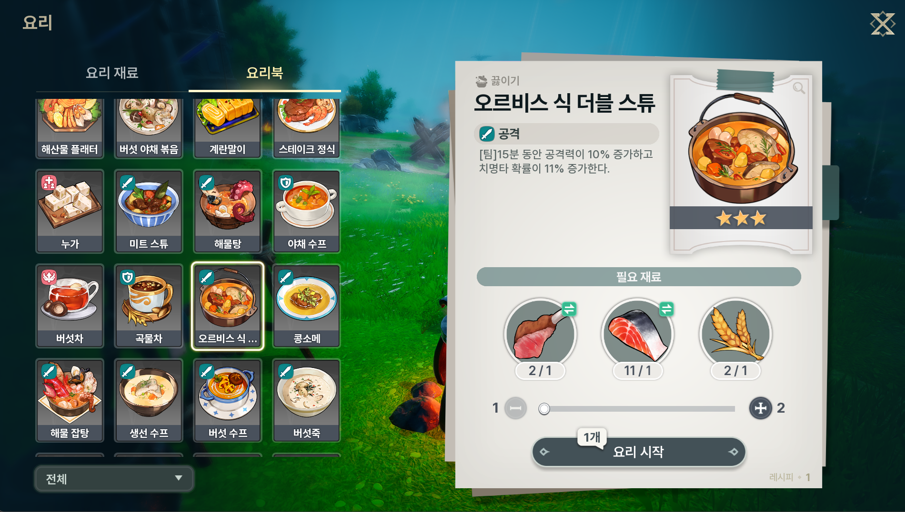

요즘 드래곤소드 재밌게 하고 있는데, 요리 시스템이 생각보다 꽤 중요하더라고요. 처음엔 그냥 대충 아무거나 만들었는데, 나중에 보니까 요리 버프가 전투력에 꽤 영향을 주더라구요.
그래서 요리 레시피랑 효과를 정리해봤습니다. 특히 팀 요리는 파티원 모두에게 버프가 적용되니까 레이드 가기 전에 꼭 챙기세요!
고급 요리는 효과가 확실한 대신 재료 구하기가 좀 빡셉니다. 그래도 보스전 갈 때는 미리 만들어두는 게 좋아요.
| 요리명 | 등급 | 유형 | 효과 | 조리법 | 재료 |
|---|---|---|---|---|---|
| 미트 스튜 | ★★★★★ | 팀 | 15분간 공격력 20% 증가 | 끓이기 | 고기류 + 고기류 + 고기류 |
| 육회 | ★★★★★ | 팀 | 1분간 활공 시 스태미나 소모 40% 감소 | 썰기 | 고기류 + 고기류 + 고기류 |
| 스테이크 정식 | ★★★★ | 개인 | 체력 2,400 즉시 회복 | 굽기 | 고기류 + 해산물류 + 약초류 |
| 해물 철판구이 | ★★★★ | 개인 | 체력 3,000 즉시 회복 | 굽기 | 해산물류 + 채소류 + 버섯류 |
| 오믈렛 | ★★★★ | 개인 | 최대 체력 30% 즉시 회복 + 20초간 초당 180 회복 |
굽기 | 채소류 + 버섯류 + 알류 |
| 콩소메 | ★★★★ | 팀 | 15분간 공격력 20% 증가 | 끓이기 | 고기류 + 버섯류 + 버섯류 |
중급 요리는 가성비가 좋아요. 일반 사냥 돌릴 때는 이 정도만 챙겨도 충분합니다.
| 요리명 | 등급 | 유형 | 효과 | 조리법 | 재료 |
|---|---|---|---|---|---|
| 군만두 | ★★★ | 팀 | 체력 850 즉시 회복 | 굽기 | 고기류 + 밀 + 밀 |
| 생선 수프 | ★★★ | 팀 | 15분간 치명타 확률 18% 증가 | 끓이기 | 생선류 + 버섯류 + 버섯류 |
| 오르비스식 더블 스튜 | ★★★ | 팀 | 15분간 공격력 10% + 치명타 11% 증가 | 끓이기 | 고기류 + 생선류 + 밀 |
| 한방차 | ★★★ | 개인 | 즉시 부활 (최대 체력 30% 회복) | 끓이기 | 약초류 + 밀 + 곡물류 |
| 샐러드 | ★★★ | 팀 | 1분간 등반/대시 스태미나 소모 20% 감소 | 썰기 | 채소류 + 채소류 |
개인적으로 오르비스식 더블 스튜가 제일 효율 좋은 것 같아요. 공격력이랑 치명타 둘 다 올려주니까요. 레이드 전에 꼭 챙깁니다.
초반에 자주 쓰는 요리들이에요. 재료 적게 들어서 부담없이 쓸 수 있습니다.
| 요리명 | 등급 | 유형 | 효과 | 조리법 | 재료 |
|---|---|---|---|---|---|
| 피쉬 앤 칩스 | ★★ | 팀 | 최대 체력 12% 즉시 회복 + 10초간 초당 1.5% 회복 |
굽기 | 난쟁이 감자 + 생선류 |
| 해물탕 | ★★ | 팀 | 15분간 치명타 피해량 15% 증가 | 끓이기 | 해산물류 + 해산물류 |
| 조개탕 | - | 팀 | 15분간 치명타 피해량 14% 증가 | 끓이기 | 조개 (단일 재료) |
| 조개구이 | - | 개인 | 체력 1,250 즉시 회복 | 굽기 | 조개 (단일 재료) |
※ 본 정보는 게임 업데이트에 따라 변경될 수 있습니다.